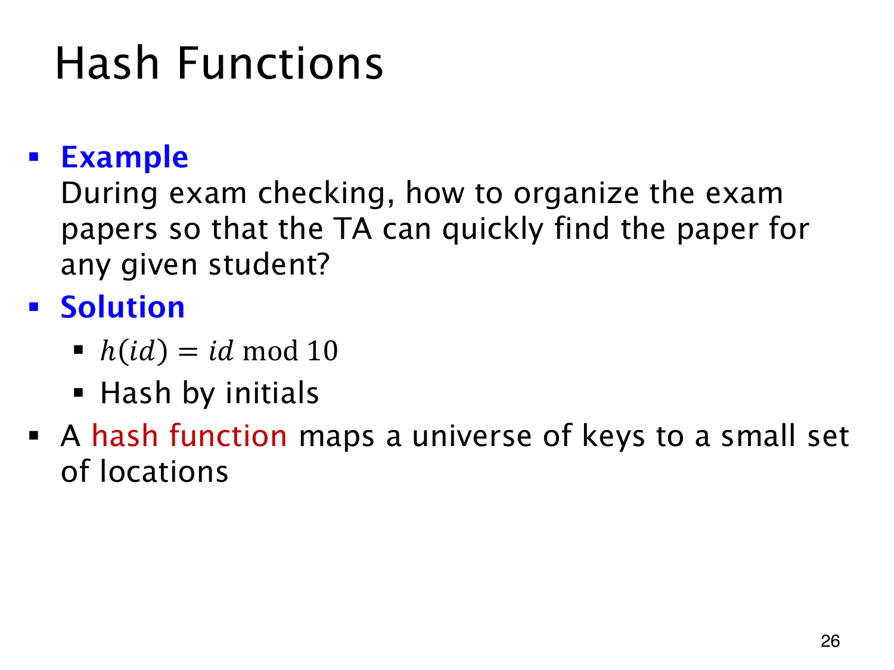

L1.12 · 第 26 页讲解原文
查看这一页课件

先按学号余数找到试卷所在组
所有试卷混放时，找一名学生的试卷可能要逐份翻。若先按
h(id)=idmod10
分成十组，学号末位为 7 的试卷就都放进第 7 组。查询时算同一个函数，先到指定组，再在组内找完整学号。按姓名首字母分类也是类似办法。
这就是 hash function（哈希函数）的作用：把很大的 key（键）集合映射到较小的 location（位置或桶）集合，用有限范围的输出决定先去哪里找。
12347 和 50927 的哈希值都是 7，却属于不同学生。找到桶后仍要核对完整学号，不能把哈希值相同当作学生相同。
这里的取余函数用于组织数据、缩小查找范围，并没有提供密码学安全性。